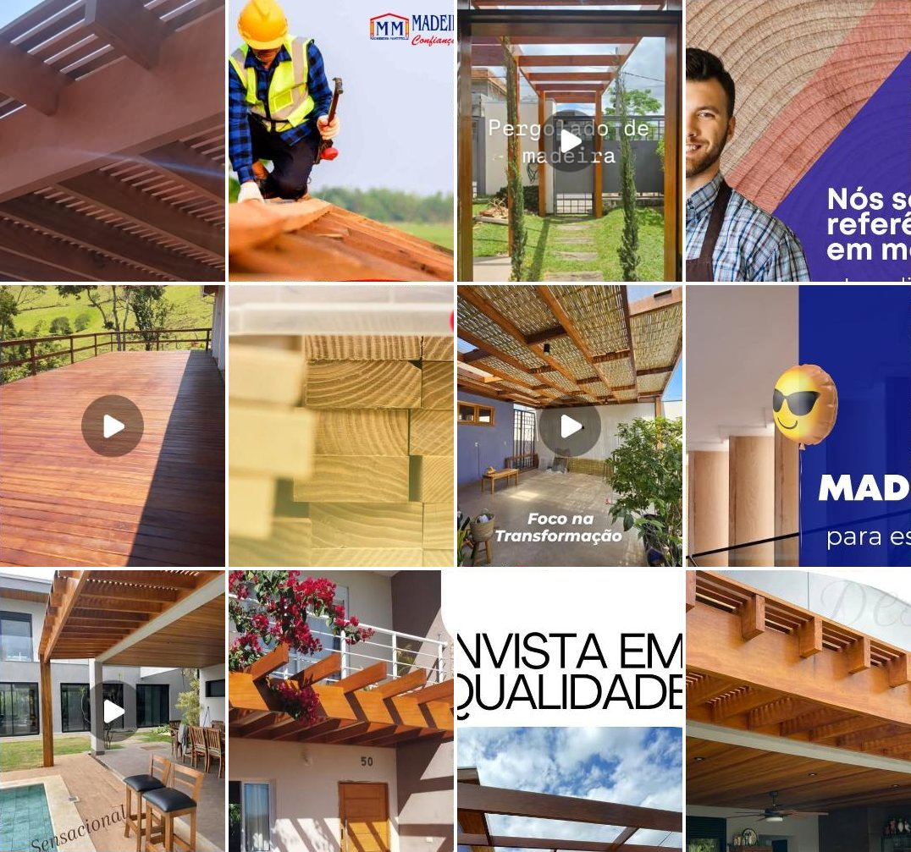

O que o cliente encontra quando te pesquisa?
Quatro canais, só um trabalhando a favor da madeireira.
Fora do ar
O endereço é seu e está pago até 2028, mas abre uma página de erro do Wix. A última versão no ar é de dezembro de 2024.
Nota 4,5 com 45 avaliações
Clientes elogiam o atendimento pelo nome, o preço e a entrega. A madeireira respondia todas e parou em junho.
Parado desde outubro de 2025
843 seguidores e 161 publicações. Oito posts em três semanas de outubro, depois nada. De 2 a 8 curtidas por post.
O mesmo post, o mesmo dia
815 seguidores, espelho do Instagram, parado no mesmo 31/10/2025. Ainda aponta para o site fora do ar.
Para resolver já
O site abre a página “Este domínio não está conectado a um site”. É para lá que levam o botão “Site” do perfil no Google, o Facebook e três dos oito primeiros resultados de quem busca “Madeireira Martinelli”.
- Endereço do sitemadeireiramartinelli.com.br
- 1º resultado da busca pelo nomemadeireiramartinelli.com.br/
produtos-madeiras - 4º resultado: a página de contatomadeireiramartinelli.com.br/
fale-conosco - 8º resultado: pergolados e decksmadeireiramartinelli.com.br/
espaço-gourmet
Quem cuida do seu nome no Google?
A nota já é boa. Falta cuidar dela.
Nas 45 avaliações, os clientes falam de atendimento paciente, preço justo depois de cotar outras madeireiras e entrega no prazo. As reclamações são de peça ou espécie diferente da combinada. A madeireira respondeu 41, e a mais recente, de agosto, está sem resposta.
- Responder todas, a começar pela de agostocom o nome do cliente e o que foi feito
- Site de volta no botão “Site”
- Categorias de telhas, telhado, pergolado e deck, além de “Loja de madeiras”
- Descrição, produtos e fotos reais do pátio e das obras
- Pedido de avaliação depois de cada entrega, pelo WhatsApp
Contagem do Google Maps em 25/11/2026. Os números mudam; refazer antes de reapresentar.
Quem o cliente encontra quando procura madeira para telhado?
Ganha em pergolado. Some em telhado, deck e telhas.
pergolado de madeira são josé dos campos1ª no mapa do Google, e o Facebook e o Instagram na primeira página1ª no mapa
madeireira são josé dos campos3ª no mapa do Google, sem site; 5ª no Maps entre 55 lojas3ª no mapa
madeira para telhado são josé dos camposaparecem Avanço, Bom Sucesso e Morumbi, e um anúncioNão aparece
deck de madeira são josé dos camposaparecem MadeiraDeck, Avanço e Mundo dos DormentesNão aparece
telhas são josé dos camposaparecem lojas de telha e calhaNão aparece
Primeira página do Google em 25/11/2026. O resultado muda por conta e lugar; refazer de dentro de São José dos Campos antes de reapresentar.
Um site no endereço que já é seu.
O mesmo madeireiramartinelli.com.br, de volta no ar, com uma página para cada coisa que o cliente procura. Cada página diz a espécie, as medidas e que a madeira nativa tem DOF, e termina no WhatsApp. Feito para aparecer no Google e nas respostas de IA. O protótipo abaixo funciona: role e clique em “Madeira para telhado”.
Abrir o protótipo em tela cheia →
As páginas
Quanto tempo o cliente espera antes de ir para o próximo?
Site novo: 100. A cidade fica entre 37 e 94.
Hojemadeireiramartinelli.com.br
FORADO AR
O endereço abre uma página de erro: não há site para o Google medir.
Site novoproposta · ativaleads.com.br/martinelli
- 100Desempenho
- 100Acessibilidade
- 100Boas práticas
- 66*SEO
1,5 s para mostrar o conteúdo principal no celular
No computador: 100 · 100 · 100 · 66* (0,8 s) · relatório do celular · do computador
E os concorrentes, medidos no mesmo dia
Site novo da Martinelliproposta
Avanço Madeirasavancomadeiras.com.br
Alemão Madeirasalemaomadeirassjc.com.br
Madeireira Pantanalmadeireirapantanalsjc.com.br
Morumbi Madeirasmorumbimadeiras.com.br
Notas do celular, de 0 a 100, medidas pelo Google em 25/11/2026 (acima de 90 é verde). *O SEO fica em 66 só porque a proposta está fechada para o Google de propósito; no domínio da madeireira, sem esse bloqueio, o item passa. A página do telhado tirou as mesmas notas.
O cliente reconhece a madeireira só de olhar o perfil?
A mesma marca, com cara de madeireira.
Releitura, não troca: o MM e o nome ficam, porque a marca tem mais de 20 anos e está na fachada. Saem o azul e o vermelho; entram os marrons e a madeira. Abaixo, a paleta, as letras e três caminhos para o logo, todos na paleta do site de exemplo. O caminho A é o que está no site.
Hoje. MM vermelho numa moldura em forma de casa, nome em azul e o lema "Confiança e Honestidade sempre!" (logo do site antigo).
Paleta
Letras
Três caminhos para o logo
MM sob o telhado
Releitura do símbolo de hoje: o MM continua dentro da casa, agora em traço de viga. É o que menos muda para quem já conhece a loja e fala de telhado, o carro-chefe.
Selo marcado a fogo
O mesmo MM num carimbo redondo, como o ferro quente que marca a tábua. Cabe inteiro na foto de perfil e vira assinatura em etiqueta e post de obra.
A placa
O nome por extenso numa placa, com o MM sob o telhado. É o mais literal: já nasce como placa talhada de fachada. Nas redes, entra só o MM.
Cada caminho tem a versão plana (o logo de verdade, para perfil, nota e fachada) e a aplicação na madeira (capa do site e posts). O lema entrou como "CONFIANÇA E HONESTIDADE, SEMPRE"; vale a grafia que o dono preferir. "Desde 2001" a confirmar com ele: o CNPJ é de 2002.

O que 843 seguidores viram de você no último ano?
Retomar o perfil que já tem 843 seguidores.
O perfil continua no mesmo endereço, @madeireiramartinelli. Os posts passam a mostrar obra de verdade, com espécie e medida, a equipe que os clientes já citam pelo nome e o telhado, que hoje quase não aparece. O Facebook recebe a mesma peça.
Bio propostaMadeireira Martinelli · desde 2001
Madeira para telhado, telhas, pergolados e decks com instalação
Madeira nativa com DOF · orçamento pelo WhatsApp
Que dúvida o seu cliente tem antes de pedir o orçamento?
Seis exemplos, seis formatos.
O que faz o cliente parar de rolar o feed?
Carrossel para explicar. Reel para parar o dedo.
Carrosséis


Reels com movimento
Esboços de movimento feitos em código, em repetição de 12 segundos. No Reel de verdade entram filmagens do pátio, das obras e da equipe, com as mesmas letras, a régua e o logo no fim. A história vem do site de 2016 e é confirmada com o dono antes de publicar.
Qual dos dois você mostraria a um cliente novo?
Arraste para comparar.

Madeira com origem, anúncio com verdade.
Código Florestal, Lei de Crimes Ambientais, Código de Defesa do Consumidor e o código do CONAR para apelos ambientais, lidos na fonte oficial em 25/11/2026.
O que fazemos
- Dizemos “com DOF” do jeito certoCódigo Florestal, Lei 12.651/2012, art. 36
- Escrevemos a espécie e a medida de cada produtoCódigo de Defesa do Consumidor, art. 31
- Mostramos obra e equipe de verdade
- Usamos avaliação de cliente só com autorização
O que nunca fazemos
- “Madeira certificada” sem certificadoDOF é licença, não certificação · CONAR, art. 36 e Anexo U
- “Ecológica” ou “sustentável” sem dizer o quêCONAR, Anexo U
- Foto de obra de outra empresa como se fosse da madeireiraCódigo de Defesa do Consumidor, art. 37
- Promessa de preço ou prazo que a madeireira não confirmou
Do orçamento ao pedido.
Montado na implantação: cada pedido de orçamento que chega pelo WhatsApp, telefone, site ou redes fica registrado. As respostas a estas quatro perguntas vêm toda semana no relatório.
Quem pede orçamento?
Nome, data, produto e quem atendeu.
De onde?
Google, Instagram, site, anúncio ou indicação, marcado no primeiro contato.
Quem fecha?
Quantos orçamentos viraram pedido, por produto, por origem e por vendedor.
Por que não fecha?
O motivo anotado: preço, prazo, produto em falta ou sem retorno.
Para começar.
- Acesso ao Facebook, ao Instagram, ao Google e ao painel do site
- Fotos das obras entregues e do pátioe autorização dos clientes que aparecem
- Lista de espécies, bitolas e serviçoso que vende e o que instala
- Cadastro no Ibama (CTF) e DOF em diae o CADMADEIRA, se houver
- Quem atende o WhatsAppe registra no CRM se o orçamento fechou
- Quem aprova os textos antes de publicar
Do esboço ao ar.
- Conversa para responder o que falta e escolher por onde começar.
- Site de volta no endereço de sempre e os links corrigidos no Google, no Facebook e no Instagram.
- Relatório estratégico apresentado em reunião: diagnóstico, concorrência e calendário dos três primeiros meses.
- Perfil do Google arrumado, CRM ligado e Instagram retomado com as primeiras publicações.
Proposta de valores
Implantação e os três pacotes mensais, em PDF.